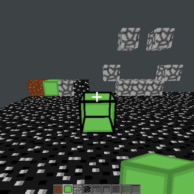
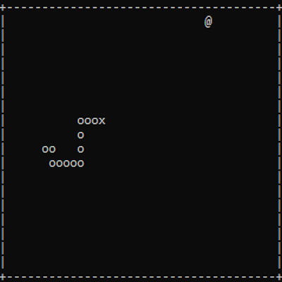
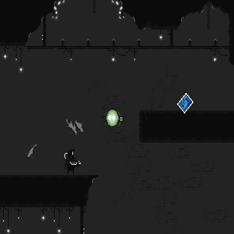

Introduction
Welcome!
My name is Nelson Rodriguez and I'm currently a second-year Game Design and Development student at the
Golisano College of Computing and Information Sciences. When it comes down to it, my passion is software programming, especially in the context of
games and interactive media. I truly enjoy learning about the foundational systems (i.e. physics engine,
graphical pipelines, gameplay systems) behind many of the awesome games that I play and make.
This website will serve as a place to both show off my cool projects and to easily access their repositories.
Projects
- Minecraft Demo

A functional demo of “Minecraft” using C++ and OpenGL.
Includes multiple core Minecraft features such as physics, breaking/place blocks, targeted block highlighting, a simple GUI, and hotbar functionality.
This was a personal project, done with the intent of learning both the fundamentals of both C++ and OpenGL via practical application. The result was an increased understanding of C++ and a solid introduction to OpenGL, as well as the fundamentals of the graphic pipeline, shader programming, and GPU functionality. - Console Snake

A real-time, interactive console application featuring the classic game of Snake.
Integrates real-time functionality through the use of manual delta-time calculations and the Window's API for input handling.
This was a personal project, with the sole intent of serving as an introduction to programming in C++. - Moonwalk

An action platformer where the player uses a companion robot to navigate otherwise unreachable terrain, while also attempting to defend themselves from the remnants of the previous security force roaming a desolate laboratory. Programmed in Monogame with C#.
This was a class group project, focused on developing a video game while simulating a more professional environment. This included both documentation and demonstrations, therefore requiring not only practical skills but also communication and group problem-solving.
Additionally, third-party applications were both used and developed to aid the overall process.